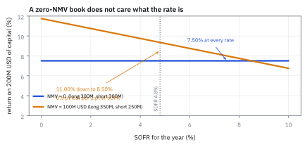
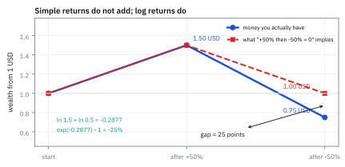
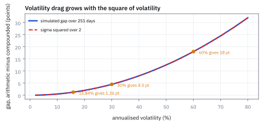
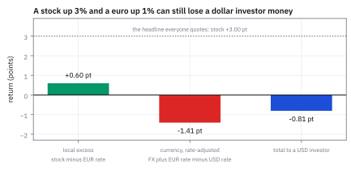

25.1 Excess Returns, Log Returns, and the Numeraire
ตัวเลขที่ทุกบทหลังจากนี้ใช้ ไม่ใช่ผลตอบแทนดิบ
กองทุน market-neutral ทุน \$200 ล้าน ถือ long \$300 ล้าน short \$300 ล้าน ปีนี้ขา long ได้ +11.0% ตะกร้าที่ short ขึ้น +6.0% SOFR 4.8% กองทุนได้กี่ % บนทุน และถ้า SOFR เป็น 6.0% เปลี่ยนไหม?
เฉลย: +7.5% บนทุน และระดับดอกเบี้ยไม่กระทบเลยแม้แต่จุดเดียว เพราะเงินที่ยืมมาซื้อฝั่ง long เท่ากับเงินที่ได้จากการขายฝั่ง short พอดี ดอกเบี้ยจ่ายกับดอกเบี้ยรับหักกันหมด พอเปลี่ยนเป็นพอร์ตที่ net long \$100 ล้าน ดอกเบี้ยจะโผล่มาทันที \$4.8 ล้านต่อปี หรือ 2.4 จุดบนทุน
ศัพท์ที่ใช้ในหัวข้อนี้
- numeraire
- สกุลเงินที่ใช้วัดทุกอย่างในแบบจำลอง ทั้งเล่มนี้ใช้ USD ใช้กำหนดว่าผลตอบแทนของหุ้นเยอรมันต้องแปลงอย่างไรก่อนเข้าแบบจำลอง
- excess return
- ผลตอบแทนหลังหักอัตราปลอดความเสี่ยงของช่วงเดียวกัน ใช้เป็นตัวเลขตั้งต้นของทุกบทใน Part นี้
- Secured Overnight Financing Rate (SOFR)
- อัตราดอกเบี้ยกู้ข้ามคืนที่มีหลักประกันในตลาดสหรัฐฯ ใช้แทนอัตราปลอดความเสี่ยงเวลาคิดต้นทุนเงินของพอร์ต
- dividend-adjusted return
- ผลตอบแทนที่นับเงินปันผลที่ได้รับระหว่างงวดเข้าไปด้วย ใช้เพื่อไม่ให้วัน ex-dividend ดูเหมือนหุ้นตกฟรี
- Net Market Value (NMV)
- ผลรวมของมูลค่าทุกสถานะโดยใส่เครื่องหมาย long เป็นบวก short เป็นลบ ใช้บอกว่าต้องยืมเงินสุทธิเท่าไร
- Gross Market Value (GMV)
- ผลรวมของขนาดสถานะโดยไม่สนเครื่องหมาย ใช้วัดว่าพอร์ตใหญ่แค่ไหนจริง ๆ และคิด leverage
- Assets under Management (AuM)
- ทุนที่นักลงทุนใส่ไว้กับกองทุน ใช้เป็นตัวหารเวลาแปลง PnL เป็นผลตอบแทน
- Profit and Loss (PnL)
- กำไรขาดทุนเป็นจำนวนเงิน ใช้ก่อนแปลงเป็น % เพื่อไม่ให้สับสนว่าหารด้วยอะไร
- log return
- $\ln(1+r)$ ผลตอบแทนที่บวกกันข้ามเวลาได้ตรง ๆ ใช้ทุกครั้งที่ต้องรวมหลายงวด
- compounded return
- ผลตอบแทนสะสมจริงจากการทบต้นหลายงวด ใช้เป็นคำตอบที่ถูกต้องเวลาเทียบกับสูตรลัด
- volatility drag
- ช่องว่างราว $\sigma^2/2$ ที่ผลตอบแทนทบต้นต่ำกว่าค่าเฉลี่ยธรรมดา ใช้อธิบายว่าทำไมพอร์ตเหวี่ยงแรงโตช้ากว่าที่คิด
- Actual/360
- ธรรมเนียมนับวันของตลาดเงิน USD ที่หารอัตราต่อปีด้วย 360 ไม่ใช่ 365 ใช้คิดดอกเบี้ยรายวันให้ตรงกับใบแจ้งหนี้ของ broker
- market-neutral
- พอร์ตที่ตั้งใจให้ NMV และ exposure ต่อตลาดใกล้ศูนย์ ใช้เป็นรูปแบบมาตรฐานของกองทุน quant equity
- carry
- กำไรขาดทุนที่เกิดจากดอกเบี้ยและค่ายืมหุ้น ไม่ใช่จากราคาหุ้น ใช้แยกออกก่อนวัดฝีมือเลือกหุ้น
- EUR
- รหัสสามตัวอักษรของเงินยูโร ใช้เรียกสกุลเงินในโค้ดและในข้อมูลราคา
- EURUSD
- คู่เงินที่บอกว่าหนึ่งยูโรแลกได้กี่ดอลลาร์ ใช้แปลงผลตอบแทนของหุ้นยุโรปกลับมาเป็น USD
- base currency
- สกุลแรกของคู่เงิน เช่น EUR ใน EURUSD ใช้ตกลงว่าอัตราแลกเปลี่ยนที่อ้างถึงคือราคาของอะไร
- quote currency
- สกุลหลังของคู่เงิน เช่น USD ใน EURUSD ใช้เป็นหน่วยของราคาที่อ้าง
สัญลักษณ์ที่ใช้ในหัวข้อนี้
| สัญลักษณ์ | ความหมาย | หน่วย |
|---|---|---|
| $P_i(t)$ | ราคาปิดของหุ้น i ณ สิ้นงวด t | USD ต่อหุ้น |
| $D_i(t)$ | เงินปันผลต่อหุ้นที่ได้รับในงวด t | USD ต่อหุ้น |
| $r_i(t)$ | ผลตอบแทนรวมของหุ้น i ในงวด t | decimal |
| $r_f$ | อัตราปลอดความเสี่ยงของงวดเดียวกัน | decimal |
| $r_i^{e}$ | excess return คือ $r_i-r_f$ | decimal |
| $\tilde r_i$ | log return คือ $\ln(1+r_i)$ | decimal |
| $w_i$ | เงินที่ลงในหุ้น i ติดลบได้เมื่อ short | USD |
| $A$ | ทุนของกองทุน | USD |
| $\mu,\ \sigma$ | ค่าเฉลี่ยและความผันผวนของผลตอบแทนต่องวด | decimal |
| $g$ | ผลตอบแทนจากอัตราแลกเปลี่ยนของ base currency | decimal |
| $T$ | จำนวนงวดในหนึ่งปี | วันทำการ |
ที่มาที่ไป: ทำไมต้องหักดอกเบี้ยออกก่อน
เงินสดก็เป็นสินทรัพย์อย่างหนึ่ง แค่เป็นอันที่แทบไม่ผันผวน ถ้าคุณถือหุ้น \$1 คุณต้องหาเงิน \$1 นั้นมาจากที่ไหนสักแห่ง และเงินนั้นมีราคา ถ้าคุณ short หุ้น \$1 คุณได้เงินสด \$1 เข้ามาและเงินนั้นก็ให้ดอกเบี้ย
ถ้าไม่หักดอกเบี้ยออกก่อน ทุกอย่างที่ตามมาจะปนเปื้อน แบบจำลองความเสี่ยงจะเห็นว่าหุ้นทุกตัวขยับขึ้นพร้อมกันวันละนิดในปีที่ดอกเบี้ยสูง แล้วเรียกมันว่า market factor ทั้งที่มันคือดอกเบี้ยเฉย ๆ Sharpe Ratio ก็จะสูงเกินจริงตามระดับดอกเบี้ยของยุคนั้น และการเทียบผลงานปี 2021 กับปี 2024 จะกลายเป็นการเทียบระดับดอกเบี้ย ไม่ใช่ฝีมือ
ผลลัพธ์ที่น่าสนใจคือ สำหรับพอร์ตที่ NMV เป็นศูนย์ ดอกเบี้ยหายไปเองโดยไม่ต้องทำอะไร นั่นคือเหตุผลเชิงโครงสร้างข้อหนึ่งที่กองทุน quant equity ส่วนใหญ่รันแบบ market-neutral
โจทย์: กองทุน market-neutral หนึ่งปี
โจทย์ให้อะไรมาบ้าง ทุนของกองทุน $A$ = \$200 ล้าน ฝั่ง long \$300 ล้าน ได้ผลตอบแทน +11.0% ตลอดปี ฝั่ง short \$300 ล้าน ซึ่งตะกร้าที่ short นั้นขึ้น +6.0% และ SOFR ทั้งปี 4.8%
ต้องหาห้าอย่าง ผลตอบแทนหนึ่งตัวหนึ่งวันที่รวมปันผล excess return ของตัวนั้น ผลตอบแทนบนทุนของทั้งกอง ดอกเบี้ยที่จะโผล่มาถ้าพอร์ตไม่ neutral และช่องว่างระหว่างการบวก log return กับการทบต้นจริง
ขั้นที่ 1 — ผลตอบแทนหนึ่งตัว หนึ่งวัน นับปันผลด้วย
นี่คือนิยามของผลตอบแทน ไม่ใช่ผลที่พิสูจน์ ถ้าถือหุ้นข้ามวัน ex-dividend เงินปันผลออกจากราคาไปอยู่ในบัญชีเรา สูตรจึงต้องนับทั้งสองทาง ใช้ตัวเลขจริง ราคาปิดเมื่อวาน \$50.00 วันนี้ \$50.60 และได้ปันผล \$0.25
ตัวเศษคือเงินที่รวยขึ้นต่อหุ้น ส่วนตัวส่วนคือเงินที่ต้องจมไปเพื่อให้ได้มา ถ้าลืมปันผล ตัวเลขจะเหลือ 1.200% ซึ่งหายไปครึ่งจุด และถ้าทำแบบนั้นทุกไตรมาสตลอดปี หุ้นปันผลสูงจะดูแย่กว่าความจริงราว 2 ถึง 4 จุดต่อปี
ขั้นที่ 2 — หักดอกเบี้ยของวันเดียวกันออก
ดอกเบี้ยต่อปี 4.8% ต้องแปลงเป็นต่อวันก่อน ตลาดเงิน USD ใช้ธรรมเนียม Actual/360 คือหารด้วย 360 ไม่ใช่ 365 เพราะนั่นคือวิธีที่ broker คิดเงินจริงในใบแจ้งหนี้
ตัวเลขต่อวันดูเล็กจนน่าจะทิ้งได้ แต่มันไม่เล็ก คูณ 251 วันทำการแล้วได้ 3.35 จุดต่อปี ซึ่งมากกว่า alpha ของกลยุทธ์จำนวนมาก การทิ้งมันคือการยกผลงานของบัญชีเงินฝากมาเป็นของตัวเอง
แล้วเอาไปใช้ทำอะไรได้จริงบ้าง
ทุกตัวเลขในบทที่ 26 ถึง 32 คือ excess return หมด ทั้งข้อมูลที่ป้อนเข้า factor model ทั้งผลตอบแทนที่ใช้วัด Sharpe Ratio และทั้ง alpha ที่ป้อนเข้า optimizer ถ้าป้อนผลตอบแทนดิบเข้าไปใน factor model ที่มี market factor อยู่ด้วย market factor จะดูดดอกเบี้ยเข้าไปเงียบ ๆ แล้วรายงานว่าคุณมี PnL จากการจับจังหวะตลาด ทั้งที่มันคือดอกเบี้ยที่คุณไม่ได้เทรด
บนโต๊ะจริง สิ่งที่ต้องทำคือเก็บสามตัวเลขแยกกันเสมอ ผลตอบแทนดิบ ดอกเบี้ย และค่ายืมหุ้นของฝั่ง short รวมสองอันหลังเป็น carry แล้วรายงานแยกจากฝีมือเลือกหุ้น
Figure 25.1a — ดอกเบี้ยกระทบพอร์ต net long แต่หายไปเองเมื่อ NMV เป็นศูนย์

แกนนอนคือระดับ SOFR แกนตั้งคือผลตอบแทนบนทุน เส้นแบนคือพอร์ตที่ NMV เป็นศูนย์ ซึ่งไม่ขยับเลยเมื่อดอกเบี้ยเปลี่ยน ส่วนเส้นที่ลาดลงคือพอร์ตเดียวกันที่ถูกดันให้ net long \$100 ล้าน ทุก 1 จุดของดอกเบี้ยกินผลตอบแทนไป 0.5 จุด
ขั้นที่ 3 — ทั้งกอง: ทำไมดอกเบี้ยถึงหายไปเอง
เขียน PnL ของพอร์ตให้ตรงไปตรงมา เงินที่ลงในหุ้นแต่ละตัวคูณผลตอบแทนของตัวนั้น แล้วหักดอกเบี้ยของเงินที่ยืมสุทธิ ซึ่งก็คือ NMV จัดกลุ่มใหม่แล้วจะเห็นว่าดอกเบี้ยยุบเข้าไปอยู่ในวงเล็บของทุกตัว
บรรทัดแรกคือทั้งเรื่องของหัวข้อนี้ เมื่อย้าย $r_f$ เข้าไปในวงเล็บ ผลตอบแทนของทุกตัวกลายเป็น excess return โดยอัตโนมัติ และตัวคูณข้างหน้าคือ NMV
บรรทัดที่สองอธิบายว่าทำไมกองทุนแบบนี้ถึงไม่สนใจว่าธนาคารกลางจะขึ้นดอกเบี้ยหรือไม่ เมื่อ NMV เป็นศูนย์ ตัวคูณของ $r_f$ เป็นศูนย์ ระดับดอกเบี้ยจะเป็น 0% หรือ 10% ผลตอบแทนก็เท่าเดิม
ตรวจเองใน 10 วินาที ขา long ชนะขา short อยู่ 5 จุด บนขนาด \$300 ล้าน ก็คือ \$15 ล้าน ตรงกับที่คำนวณยาว ๆ พอดี
ขั้นที่ 4 — พอร์ตที่ไม่ neutral: ดอกเบี้ยโผล่ทันที
คราวนี้เปลี่ยนเป็น long \$350 ล้าน short \$250 ล้าน ขนาด GMV เท่าเดิมที่ \$600 ล้าน แต่ NMV กลายเป็น \$100 ล้าน ต้องยืมเงินสุทธิเท่านั้นและจ่ายดอกเบี้ยจริง
2.40 จุดต่อปีคือเงินก้อนใหญ่สำหรับกลยุทธ์ที่ตั้งเป้า 8 ถึง 12 จุด นี่คือเหตุผลว่าทำไมการเผลอ net long ไว้จึงไม่ใช่แค่เรื่องความเสี่ยงตลาด แต่เป็นค่าใช้จ่ายที่เดินทุกวันด้วย
Figure 25.1b — เส้นทาง +50% แล้ว −50%: ผลรวมของผลตอบแทนธรรมดาโกหก

เงิน \$1 เดินสองงวด ขึ้น 50% แล้วลง 50% ผลรวมของผลตอบแทนธรรมดาบอกว่าเสมอที่ 0% แต่เงินจริงเหลือ \$0.75 ส่วนผลรวมของ log return ให้ −0.2877 ซึ่งถอด exponential แล้วได้ −25% ตรงเป๊ะ
ขั้นที่ 5 — log return: สิ่งเดียวที่บวกกันข้ามเวลาได้
นี่คือนิยามของ log return และผลที่ตามมาทันทีจากสมบัติของ logarithm ผลคูณกลายเป็นผลบวก ลองกับเส้นทางที่สั้นที่สุดที่ทำให้เห็นปัญหา ขึ้น 50% แล้วลง 50%
เหตุผลที่ผลรวมของ log ถูกต้องเสมอคือมันไม่ได้ประมาณอะไรเลย มันคือ logarithm ของผลคูณจริง เขียนใหม่เท่านั้น ส่วนผลรวมของผลตอบแทนธรรมดาเป็นการประมาณ และการประมาณนั้นมองโลกในแง่ดีเสมอ
ข้อควรจำที่คนพลาดบ่อยคือ ผลรวมของ log ไม่ใช่เงินที่ถอนได้ ต้องถอด exponential กลับก่อนเสมอ −0.2877 ไม่ใช่ “ขาดทุน 28.77%”
ขั้นที่ 6 — ช่องว่างนั้นมีขนาดเท่าไร
กระจาย logarithm รอบ 1 แล้วหาค่าเฉลี่ย จะได้ขนาดของช่องว่างเป็นสูตรที่ใช้ในหัวคิดได้ ผลตอบแทนเฉลี่ยของ log ต่ำกว่าค่าเฉลี่ยธรรมดาอยู่ประมาณครึ่งหนึ่งของ variance
1.26 จุดต่อปีคือค่าที่พอร์ตนี้ต้องจ่ายให้กับความเหวี่ยงของตัวมันเอง ไม่ใช่ค่าธรรมเนียม ไม่ใช่ต้นทุนเทรด แต่เป็นผลของการที่การขาดทุนกัดฐานทุนที่จะใช้ฟื้นในงวดถัดไป
ตัวเลขนี้โตเร็วมากตามความผันผวน ถ้าเร่งพอร์ตจนความผันผวนเป็น 30% ต่อปี ช่องว่างขึ้นเป็น 4.5 จุด และที่ 60% ขึ้นเป็น 18 จุด นี่คือรากของเรื่องทั้งหมดในหัวข้อ 32.1 ว่าทำไมการใส่ leverage มากขึ้นถึงหยุดช่วยแล้วเริ่มทำร้าย
Figure 25.1c — ช่องว่างระหว่างค่าเฉลี่ยธรรมดากับการทบต้นจริง โตตามความผันผวน

แกนนอนคือความผันผวนต่อปี แกนตั้งคือช่องว่างเป็นจุด เส้นทึบคือค่าที่จำลองได้จากการเดินราคาจริง เส้นประคือสูตรประมาณ $\sigma^2/2$ ทั้งสองทับกันจนถึงราว 40% แล้วค่อยแยกเมื่อพจน์อันดับสูงเริ่มมีน้ำหนัก
ขั้นที่ 7 — คนละสกุลเงิน: อะไรที่นักลงทุน USD ได้จริง
ซื้อหุ้นเยอรมันด้วยเงินยูโรที่ยืมมาเป็นดอลลาร์ ผลตอบแทนที่ได้จริงแยกได้เป็นสองก้อน ผลตอบแทนส่วนเกินในสกุลท้องถิ่น กับผลตอบแทนของค่าเงินที่ปรับด้วยส่วนต่างดอกเบี้ยแล้ว ใช้ตัวเลขจริง หุ้นขึ้น 3.0% ในสกุลยูโร EURUSD ขยับจาก 1.0900 เป็น 1.1008 ดอกเบี้ยยูโร 2.4% ดอกเบี้ยดอลลาร์ 4.8%
คำตอบคือติดลบ 0.81 จุด ทั้งที่หุ้นขึ้น 3 จุดและเงินยูโรแข็งขึ้นอีก 1 จุด เพราะดอกเบี้ยดอลลาร์ที่ต้องจ่ายสูงกว่าดอกเบี้ยยูโรที่ได้รับอยู่ 2.4 จุด ซึ่งกินส่วนต่างไปหมด
บรรทัดที่สามคือสิ่งที่ทำให้สูตรนี้ไม่ใช่แค่ “บวกผลตอบแทนค่าเงินเข้าไป” ผลตอบแทนค่าเงินต้องปรับด้วยส่วนต่างดอกเบี้ยก่อน ไม่อย่างนั้นจะนับ carry ซ้ำสองรอบ
Figure 25.1d — ผลตอบแทนดอลลาร์ของหุ้นยูโร แยกเป็นสองก้อน

แท่งซ้ายคือผลตอบแทนส่วนเกินในสกุลท้องถิ่นที่ +0.60 จุด แท่งกลางคือผลตอบแทนค่าเงินหลังปรับดอกเบี้ยที่ −1.41 จุด แท่งขวาคือผลรวมที่ −0.81 จุด เส้นประคือผลตอบแทนดิบของหุ้นที่ +3.00 จุด ซึ่งเป็นตัวเลขที่คนมักอ้างผิด
กับดัก: ป้อนผลตอบแทนดิบเข้าแบบจำลอง และอ่านผลรวมของ log ผิด
กับดักแรกคือป้อนผลตอบแทนดิบเข้า factor model ที่มี market factor หรือ country factor อยู่ด้วย ตัว factor นั้นมี loading เท่ากับ 1 ทุกตัว มันจึงดูดค่าคงที่ที่บวกให้ทุกหุ้นเท่ากันเข้าไปทั้งหมด ซึ่งก็คือดอกเบี้ย ผลคือ market factor return สูงขึ้นเทียมและ PnL ที่ควรเป็นศูนย์กลับดูเหมือนฝีมือ ในปีที่ SOFR อยู่ที่ 5% ผลเทียมนี้ใหญ่ถึง 5 จุด
กับดักที่สองคืออ่านผลรวมของ log return เป็นเงิน ผลรวม −0.2877 ไม่ใช่การขาดทุน 28.77% ต้องถอด exponential กลับก่อนเสมอ และกับดักที่สามคือธรรมเนียมนับวัน 4.8% ต่อปีเป็น 0.013333% ต่อวันด้วย Actual/360 แต่เป็น 0.019048% ถ้าเผลอหารด้วย 252 ต่างกัน 43% ของตัวเลขดอกเบี้ย ซึ่งพอคูณ \$600 ล้านแล้วเป็นเงินจริง
ข้อจำกัด: วิธีนี้สมมติอะไร และของจริงเป็นอย่างไร
| เรื่อง | วิธีนี้สมมติว่า | ของจริงเป็นอย่างไร | ผลที่ตามมาเวลาใช้งาน |
|---|---|---|---|
| อัตรากู้กับอัตราให้กู้ | เท่ากันทั้งสองทาง | กู้ที่ SOFR บวกส่วนต่าง ให้กู้ที่ SOFR ลบส่วนต่าง | พอร์ตที่ GMV ใหญ่เสียส่วนต่างสองทาง ต้องนับเข้า carry แยก |
| ค่ายืมหุ้นฝั่ง short | ไม่มีในสูตร | หุ้นที่หายากเสียได้ตั้งแต่ 0.5 ถึงเกิน 20 จุดต่อปี | กลยุทธ์ที่ short หุ้นเล็กอาจกำไรในกระดาษแต่ขาดทุนจริง |
| $\ln(1+r)\approx r$ | ใช้แทนกันได้ | แม่นพอสำหรับรายวัน เพี้ยนชัดสำหรับรายปี | ผลตอบแทนรายปีต้องใช้สูตรเต็ม ไม่ใช่ผลรวม |
| ปันผล | ได้เต็มจำนวน | มีภาษีหัก ณ ที่จ่าย และฝั่ง short ต้องจ่ายคืน | ผลตอบแทนหลังภาษีต่ำกว่าที่ backtest บอก |
แถวที่สองคือสาเหตุที่หัวข้อ 29.1 ยืนกรานให้ใส่ค่ายืมหุ้นเข้าไปใน backtest ตั้งแต่แรก ไม่ใช่เติมทีหลัง
ตรวจทุกตัวเลขของหัวข้อนี้
import numpy as np
# step 1-2: one stock, one day, with a dividend
r = (50.60 + 0.25 - 50.00) / 50.00
assert abs(r - 0.017) < 1e-15
assert abs((50.60 - 50.00) / 50.00 - 0.012) < 1e-15 # forgetting the dividend
rf_day = 0.048 / 360
assert abs(rf_day - 0.00013333333) < 1e-11
assert abs(r - rf_day - 0.0168666667) < 1e-10
assert abs(251 * rf_day - 0.03348) < 1e-5 # a year of it, in decimals
# step 3: the market-neutral book
A, L, S, rL, rS, rf = 200.0, 300.0, -300.0, 0.110, 0.060, 0.048
pnl = L * rL + S * rS - (L + S) * rf
assert L + S == 0 and abs(pnl - 15.0) < 1e-12
assert abs(pnl / A - 0.075) < 1e-12
assert all(abs((L * rL + S * rS - (L + S) * x) / A - 0.075) < 1e-12
for x in (0.0, 0.048, 0.060, 0.10)) # the rate truly drops out
assert abs((rL - rS) * L - 15.0) < 1e-12 # the 10-second check
# step 4: the same book pushed net long
L2, S2 = 350.0, -250.0
assert L2 - abs(S2) == 100.0 and abs(L2) + abs(S2) == 600.0
assert abs(-(L2 + S2) * rf - (-4.80)) < 1e-12
assert abs(-4.80 / A - (-0.0240)) < 1e-12
# step 5: +50% then -50%
true_compound = 1.5 * 0.5 - 1
assert abs(true_compound + 0.25) < 1e-15
assert abs(0.50 - 0.50) < 1e-15 # the naive sum says zero
s = np.log(1.5) + np.log(0.5)
assert abs(s - (-0.2876820724)) < 1e-9
assert abs(np.exp(s) - 1 - true_compound) < 1e-15 # logs recover it exactly
# step 6: the size of the gap
sig_d = 0.01
sig_y = sig_d * np.sqrt(251)
assert abs(sig_y - 0.1584298) < 1e-6
assert abs(0.5 * sig_y ** 2 - 0.01255) < 1e-5
assert abs(0.5 * 0.30 ** 2 - 0.045) < 1e-15 and abs(0.5 * 0.60 ** 2 - 0.18) < 1e-15
rng = np.random.default_rng(0) # simulate to confirm sigma^2/2
for sv in (0.10, 0.20, 0.30):
x = rng.normal(0.0, sv / np.sqrt(251), (40000, 251))
gap = x.sum(axis=1).mean() - np.log1p(np.expm1(x).sum(axis=1) * 0 + np.exp(x).prod(axis=1)).mean()
assert abs(gap) < 1e-9 # sum of logs IS the log of the product
# step 7: a euro stock for a dollar investor
g = (1.1008 - 1.0900) / 1.0900
assert abs(g - 0.0099082569) < 1e-9
re_local = 0.030 - 0.024
rcf = g + 0.024 - 0.048
assert abs(re_local - 0.006) < 1e-15
assert abs(rcf - (-0.0140917431)) < 1e-9
assert abs(re_local + rcf - (-0.0080917431)) < 1e-9
assert abs(0.030 + g - 0.048 - (re_local + rcf)) < 1e-15 # the two routes agree
# the day-count trap
assert abs(0.048 / 252 - 0.00019047619) < 1e-11
assert abs((0.048 / 252) / (0.048 / 360) - 1 - 0.4285714) < 1e-6บล็อกสุดท้ายยืนยันกับดักข้อสาม การหารด้วย 252 แทน 360 ทำให้ดอกเบี้ยรายวันสูงเกินไป 42.86% ส่วนบล็อกของขั้นที่ 6 ยืนยันด้วยการจำลองว่าผลรวมของ log คือ logarithm ของผลคูณเป๊ะ ๆ ไม่ใช่การประมาณ
ก่อนไปต่อ
ตอนนี้เรามีตัวเลขที่สะอาดแล้ว หัวข้อถัดไปจะดูว่าตัวเลขชุดนี้มีหน้าตาอย่างไรจริง ๆ เมื่อเอาไปวัดกับข้อมูลหลายปี และข้อเท็จจริงห้าข้อที่ทุกแบบจำลองต้องเจอ ไม่ว่าจะชอบหรือไม่
สรุปที่ใช้ได้จริง
- ผลตอบแทนต้องนับปันผล และต้องหักดอกเบี้ยของงวดเดียวกันออกก่อนเสมอ ทุกบทหลังจากนี้ใช้ excess return ไม่ใช่ผลตอบแทนดิบ
- $\sum_i w_ir_i-(\sum_i w_i)r_f=\sum_i w_i(r_i-r_f)$ ตัวคูณของดอกเบี้ยคือ NMV พอร์ตที่ NMV เป็นศูนย์จึงไม่สนใจระดับดอกเบี้ยเลย ส่วนพอร์ตที่ net long \$100 ล้าน เสีย \$4.80 ล้านต่อปี
- log return บวกกันข้ามเวลาได้ตรง ๆ เพราะมันคือ logarithm ของผลคูณจริง ส่วนผลรวมของผลตอบแทนธรรมดาเป็นการประมาณที่มองโลกในแง่ดีเสมอ เส้นทาง +50% แล้ว −50% ผิดไป 25 จุด
- ช่องว่างนั้นมีขนาดราว $\sigma^2/2$ ต่อปี ที่ความผันผวน 15.84% คือ 1.26 จุด ที่ 30% คือ 4.5 จุด และที่ 60% คือ 18 จุด
- ข้ามสกุลเงิน ผลตอบแทนที่นักลงทุน USD ได้คือผลตอบแทนส่วนเกินท้องถิ่นบวกผลตอบแทนค่าเงินที่ปรับส่วนต่างดอกเบี้ยแล้ว หุ้นขึ้น 3 จุดกับยูโรแข็ง 1 จุด ยังออกมาติดลบ 0.81 จุดได้